This was first published on https://www.dbi-services.com/blog/k8s-on-windows-virtualbox/ (2021-04-12)
Republishing here for new followers. The content is related to the versions available at the publication date.
.
This is a little demo, easy to copy-paste, if you want to play with Kubernetes on your laptop. And, not a simple “Hello World” but a real database running here, able to scale up and down with full availability.
I use Oracle VirtuaBox because I’m a big fan of Oracle products, especially when they are good and free. However, you can use Hyper-V (then just skip this paragraph and use –driver=hyperv instead of –driver=virtualbox)
I have VirtualBox installed. You can install it for free https://www.virtualbox.org/wiki/Downloads
Virtualization must be enabled in the BIOS:
Microsoft Windows [Version 10.0.19042.906]
(c) Microsoft Corporation. All rights reserved.
C:\Users\Franck> systeminfo
...
Hyper-V Requirements: VM Monitor Mode Extensions: Yes
Virtualization Enabled In Firmware: Yes
Second Level Address Translation: Yes
Data Execution Prevention Available: Yes
C:\WINDOWS\system32>bcdedit
...
hypervisorlaunchtype Off
Even if this is the Hyper-V requirements, they are the same for VirtualBox and hypervisorlaunchtype at off allows VirtualBox.
I’ll use Chocolatey software manager to install Minikube, here is how to install it from a PowerShell window:
Set-ExecutionPolicy Bypass -Scope Process -Force; [System.Net.ServicePointManager]::SecurityProtocol = [System.Net.ServicePointManager]::SecurityProtocol -bor 3072; iex ((New-Object System.Net.WebClient).DownloadString('https://chocolatey.org/install.ps1'))
(run this on a PowerShell window as Administrator)
Microsoft Windows [Version 10.0.19042.906]
(c) Microsoft Corporation. All rights reserved.
C:\Users\Franck>choco
Chocolatey v0.10.15
Please run 'choco -?' or 'choco <command> -?' for help menu.
C:\Users\Franck>
Minikube is a tool to run a single node Kubernetes on laptop:
choco install minikube
(run this on a ‘DOS’ window as Administrator)
The minikube command will be used to interact with the VM (start, stop, tunnel…), and the kubectl to interact with kubernetes.
Helm is an open source package tool for kubernetes to install applications.
choco install kubernetes-helm
(run this on a ‘DOS’ window as Administrator)
I’ll use Helm to install the package I want to run. I work with databases, and I’ll install one for this demo. Even if Kubernetes is initially designed to scale stateless applications, it has evolved with stateful sets, and persistent storage. However, it may not be the right platform for a monolith database. Then, I’ll run YugabyteDB, an open-source cloud-native distributed database, which makes more sense in an environment that can scale by adding pods, and where replication maintains the availability when a node goes down, or is added.
The installation on a local cluster is documented:
https://docs.yugabyte.com/latest/quick-start/create-local-cluster/kubernetes/
This creates a cluster with no replication (replication factor 1) which is ok for a local lab on a laptop.
I’ll do something a bit different, trying RF3 (the replication factor should be an odd number as there’s a quorum election for the leader). This means more pods, and I’ll limit the memory and CPU so that it can run on any laptop. I’m doing this on my Surface Pro which has 2 cores, 4 Intel threads, and 16GB RAM).
First add the Yugabyte Helm charts repository
helm repo add yugabytedb https://charts.yugabyte.com
Here is the current version:
C:\Users\Franck> helm repo update
C:\Users\Franck> helm search repo yugabytedb/yugabyte
NAME CHART VERSION APP VERSION DESCRIPTION
yugabytedb/yugabyte 2.5.3 2.5.3.1-b10 YugabyteDB is the high-performance distributed ...
You can download the chart if you want to have a look at it (helm repo update & helm fetch yugabytedb/yugabyte)
Now I can start the Minikube node:
minikube start --driver=virtualbox --cpus=4 --memory 8192 --disk-size 30g
This creates and starts a VirtualBox VM. It seems that whatever the –cpu I pass, it creates a 2 vCPU VM which is not sufficient for a RF3 cluster (I need 3 yb-master and at least 3 yb-tserver).
I’ll update the settings with VBoxManage to set to 4 vCPU (the maximum threads on my Surface Pro) but capping them at 80% to leave some capacity to for host OS.
minikube stop
"C:\Program Files\Oracle\VirtualBox\VBoxManage" modifyvm minikube --cpus 4 --cpuexecutioncap 80
minikube start
Of course you can do that with the VirtualBox GUI.
I create a namespace for my Yugabyte universe:
kubectl create namespace franck-yb
Checking them:
C:\Users\Franck> kubectl get namespaces
NAME STATUS AGE
default Active 7m54s
franck-yb Active 24s
kube-node-lease Active 7m55s
kube-public Active 7m55s
kube-system Active 7m55s
kubernetes-dashboard Active 9s
All that can also visible from the web console that is started with:
minikube dashboard as this opens a localhost port to display the kubernetes dashboard.
I can start a YugabyteDB universe on a Kubernetes cluster with a simple helm install yugabyte yugabytedb/yugabyte --namespace franck-yb but the defaults are too large for my laptop:
Here it is with my settings:
helm install yugabyte yugabytedb/yugabyte --namespace franck-yb --set resource.master.requests.cpu=0.5,resource.master.requests.memory=1Gi,storage.master.count=1,storage.master.size=2Gi,resource.tserver.requests.cpu=0.5,resource.tserver.requests.memory=1Gi,storage.tserver.count=1,storage.tserver.size=2Gi,replicas.master=3,replicas.tserver=3,storage.ephemeral=true
I’ve defined storage.ephemeral=true here and that’s probably not what you want for a database in general. But, first, this is a lab on my laptop, running in a VirtualBox VM that I can snapshot. And I use a database that is replicated (replication factor 3) and then one node, out of 3, can be lost, storage included. And a new node added later, with no data loss, as the replicas will be populated from the other nodes.
If you want no replication, less servers, but persistent storage, just change the last 3 settings with replicas.master=1,replicas.tserver=1,storage.ephemeral=false
With low resource this may take a few seconds:
C:\Users\Franck> kubectl --namespace franck-yb get pods
NAME READY STATUS RESTARTS AGE
yb-master-0 0/1 ContainerCreating 0 1m1s
yb-master-1 0/1 ContainerCreating 0 1m1s
yb-master-2 0/1 ContainerCreating 0 1m
yb-tserver-0 0/1 ContainerCreating 0 1m1s
yb-tserver-1 0/1 ContainerCreating 0 1m1s
yb-tserver-2 0/1 ContainerCreating 0 1m1s
The stateful sets take care of the order (masters are started before tservers) and the network addresses (which must be known before they are created).
You can ssh to the VM to check what is running:
minikube ssh
stty columns 120
(The tty columns was not set correctly) but all is also accessible from the web console of kubernetes with `minikube dashboard` and choosing the right namespace.
When you want to cleanup all this you can:
helm delete yugabyte -n franck-yb
minikube delete
the last command even deletes the VirtualBox VM.
But before cleaning it up I check that I can connect to my distributed database:
kubectl exec --namespace franck-yb -it yb-tserver-0 -- /home/yugabyte/bin/ysqlsh -h yb-tserver-0.yb-tservers.franck-yb
This runs the YSQLSH command line for YugabyteDB SQL API through kubernetes container exec.
But, as this SQL API is fully compatible with PostgreSQL I can just forward the YSQL port from one of the table servers:
kubectl --namespace franck-yb port-forward svc/yb-tservers 5433:5433
With this I can connect with psql, DBeaver, or any PostgreSQL client as YugabyteDB is fully postgres-compatible:
C:\Users\fpa> psql -h localhost -p 5433 -U yugabyte
psql (12.6, server 11.2-YB-2.5.3.1-b0)
Type "help" for help.
yugabyte=# create table demo ( k int primary key, v int ) split into 3 tablets;
CREATE TABLE
yugabyte=# insert into demo select generate_series,42 from generate_series(1,1000);
INSERT 0 1000
yugabyte=# select count(*) from demo;
count
------------
1000
(1 row)
You see the version, this YugabyteDB version 2.5.3 is compatible with PostgreSQL 11.2, and I have created a demo table sharded over 3 tablets, with 1000 rows.
I can check the tablets from the web console, exposed by the yb-master-ui service. Here are all exposed services:
C:\Users\Franck> kubectl --namespace franck-yb get services
NAME TYPE CLUSTER-IP EXTERNAL-IP PORT(S) AGE
yb-master-ui LoadBalancer 10.105.151.9 <pending> 7000:31447/TCP 7m42s
yb-masters ClusterIP None <none> 7000/TCP,7100/TCP 7m42s
yb-tserver-service LoadBalancer 10.100.217.206 <pending> 6379:31842/TCP,9042:32404/TCP,5433:31626/TCP 7m42s
yb-tservers ClusterIP None <none> 9000/TCP,12000/TCP,11000/TCP,13000/TCP,9100/TCP,6379/TCP,9042/TCP,5433/TCP 7m42s
There’s no external IP in Minikube but it is easy to tunnel the UI (port 7000 of the master):
kubectl --namespace franck-yb port-forward svc/yb-master-ui 7000:7000
Then I can access the YugabyteDB GUI on http://localhost:7000 and this is where the following screenshots come from.
The big advantage of Kubenetes is that a node can be killed, another created, scaling down and up the cluster. That’s possible with a stateless application, but also with a database, when it is distributed shared-nothing one. And it stays available thanks to a replication factor higher than one.
All 3 nodes are up: 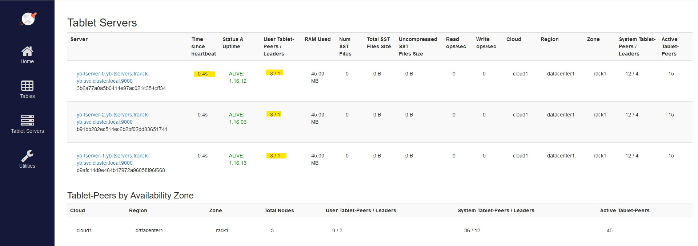 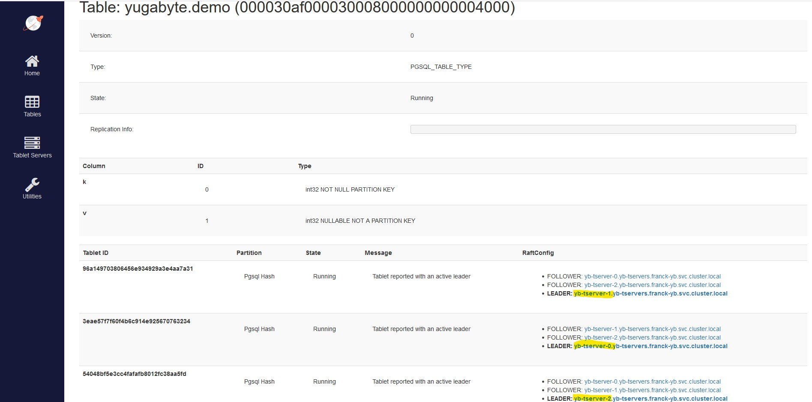
My table is hash-sharded into 3 tablets, with one leader on each node and followers on 2 other nodes:
I scale down the tablet server stateful-set to 2 nodes:
C:\Users\Franck> kubectl scale -n franck-yb statefulset yb-tserver --replicas=2
statefulset.apps/yb-tserver scaled
The yb-tserver-2 is considered temporarily unavailable, still with 3 tablets but no leaders: 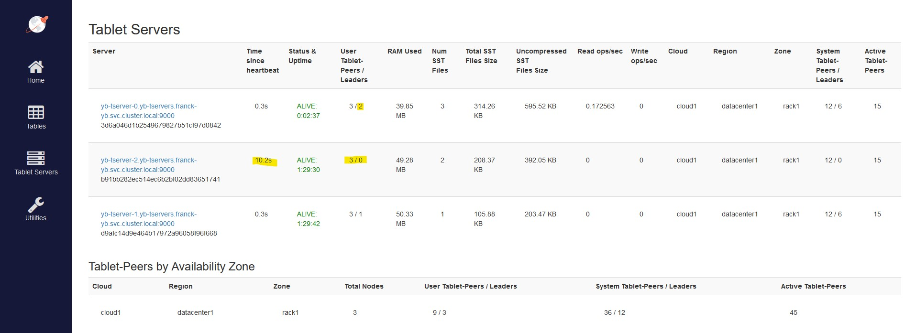 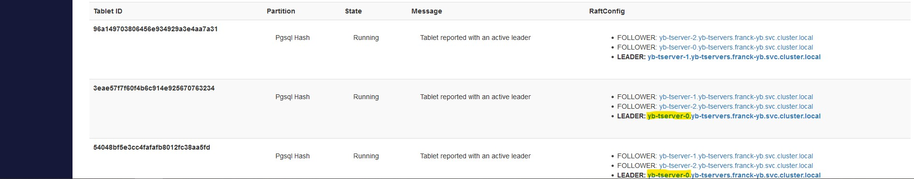
The follower that was in yb-tserver-0 has been elected as the new leader for this tablet:
At that point, my demo table is still fully available. And each of the remaining node have a full copy of the data.
After a minute, the node is definitely considered as dead: 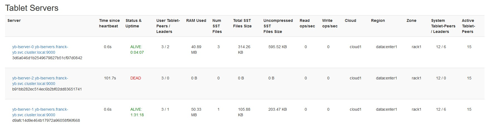
Now I scale up to 3 nodes again:
C:\Users\Franck> kubectl scale -n franck-yb statefulset yb-tserver --replicas=3
statefulset.apps/yb-tserver scaled
The node is detected and rebalancing starts: 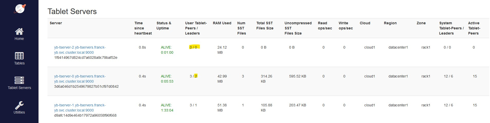 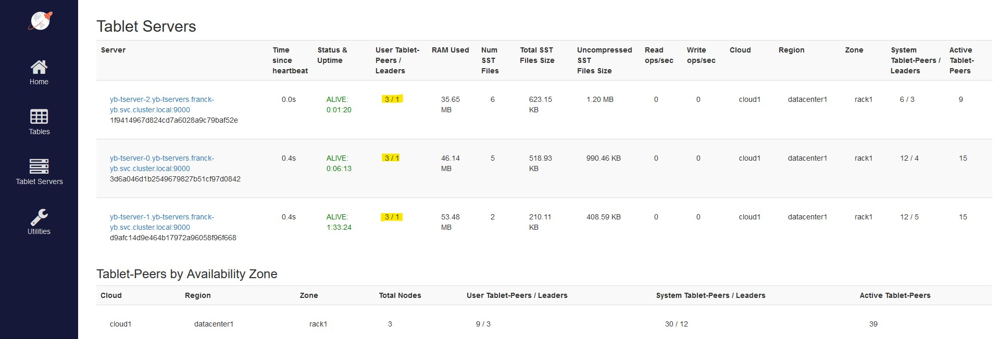 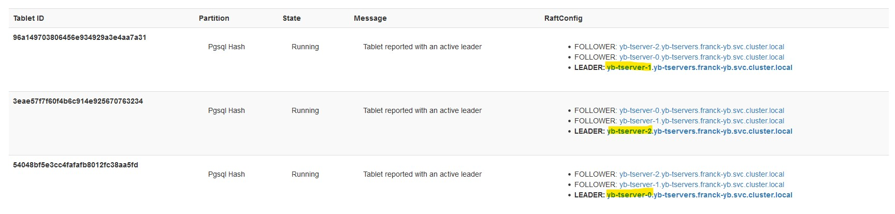
The tablet leaders distribution is quickly re-balanced to the 3 pods:
With 1000 rows this is very fast of course.
As I defined my minikube VM with only 4 vCPUs I canot scale-up the yb-server to one additional pod. But, and please remember this is a lab, I can kill one of the yb-master to leave room for one additional pod:
kubectl scale -n franck-yb statefulset yb-master --replicas=2
kubectl scale -n franck-yb statefulset yb-tserver --replicas=4
The failure of one master is detected, but thanks to RF3 the system is still available: 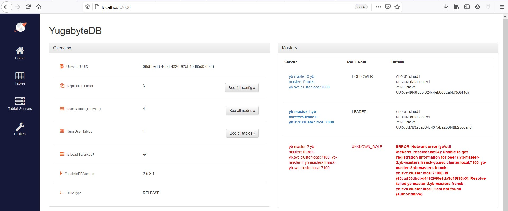 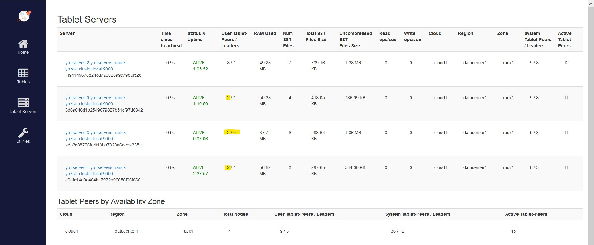 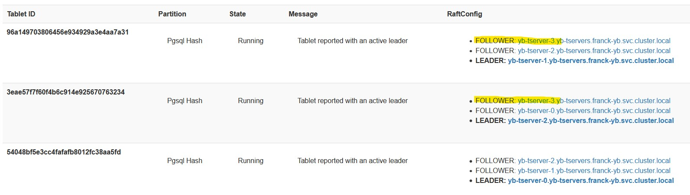
The new node has taken over some of the followers:
There is no need to elect a leader in this new node:
Of course, if I create a new table it will be sharded with leaders on all nodes:
yugabyte=# create table demo2 as select * from demo;
SELECT 1000
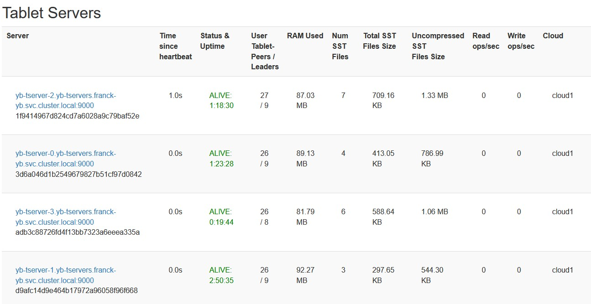
There are 32 tablets for this table because I didn’t specify the SPLIT INTO clause and the default is 8 per server (–ysql_num_shards_per_tserver=8) here.
I used non-persistent storage for two reasons. First, Minikube has some limitations when compared with a real Kubernetes cluster, and I’m not sure how I can run a multi-node RF3 cluster with persistent volumes and easily scale it up and down. But the main reason is that this is a lab, running on VirtualBox, and I can save the state at this VBox level.
Here is how I stop the VirtualBox VM keeping the disc + memory state, and start it up again:
C:\Users\fpa> "C:\Program Files\Oracle\VirtualBox\VBoxManage" controlvm minikube savestate
0%...10%...20%...30%...40%...50%...60%...70%...80%...90%...100%
C:\Users\fpa> "C:\Program Files\Oracle\VirtualBox\VBoxManage" startvm minikube --type headless
Waiting for VM "minikube" to power on...
VM "minikube" has been successfully started.
No data was loss here, my demo table is still there because, from the Kubernetes perspectives, the pods were not stopped, just paused by the hypervisor.
In summary: you can play, on a 2 cores laptop, with scaling up and down a distributed database running its nodes on kubernetes pods. Feel free to follow me and discuss on Twitter about this. Databases in microservices and stateless containers is hot topic today.
During the week-end, I played with #kubernetes on my laptop and here is a blog post:https://t.co/SIz5tUiKeM – Not a "Hello World" example. A real RDBMS scaling on containers #minikube #k8s @virtualbox @Windows @Yugabyte
— Franck Pachot (@FranckPachot) April 12, 2021
{kind=link}
{kind=link}
{kind=link}
{kind=link}
{kind=link}
{kind=link}
{kind=link}
{kind=link}
{kind=link}
{kind=link}
{kind=link}
{kind=link}